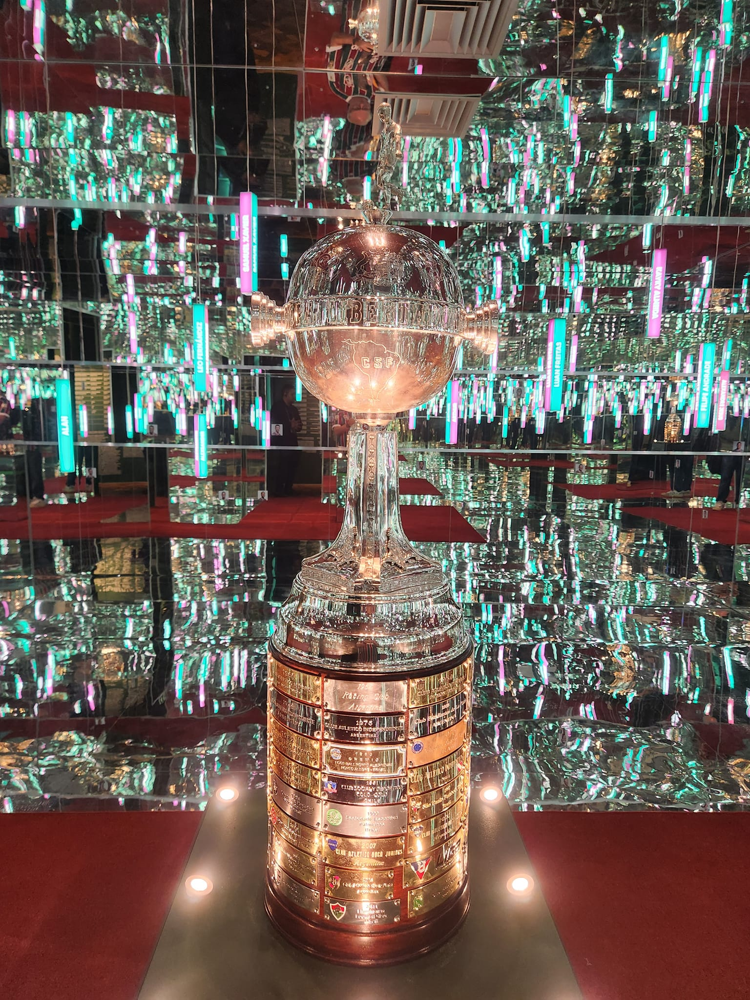

O título do Fluminense na Libertadores é o maior capítulo internacional da história tricolor. Foi a conquista que encerrou uma espera longa, curou a ferida da final perdida em 2008 e colocou o clube, de forma definitiva, no topo da América do Sul.
A taça veio com uma campanha de 13 jogos, oito vitórias, três empates, duas derrotas, 24 gols marcados e 12 sofridos. O Tricolor liderou o Grupo D, que tinha River Plate, The Strongest e Sporting Cristal, depois eliminou Argentinos Juniors, Olimpia e Internacional até chegar à final contra o Boca Juniors.
Mais do que uma campanha campeã, foi uma afirmação de identidade. O Fluminense de Fernando Diniz jogava com posse, aproximação, coragem para sair tocando, laterais por dentro, volantes participando da construção e atacantes se movimentando para gerar superioridade. Era um time diferente do padrão mais reativo comum em muitos mata-matas sul-americanos. E foi justamente com essa ideia, mesmo sob pressão, que o clube venceu a América.
A conquista continental também se conecta à tradição do Fluminense em torneios de mata-mata. Antes de levantar a América em 2023, o Tricolor já havia escrito um capítulo nacional marcante ao conquistar a Copa do Brasil. No cenário sul-americano, esse peso fica ainda maior quando a trajetória tricolor é colocada dentro da história da Libertadores.
A conquista foi inédita e teve peso simbólico gigantesco. O Boca Juniors era seis vezes campeão da Libertadores e buscava igualar o Independiente como maior vencedor da competição. O Fluminense, por outro lado, tentava levantar a taça pela primeira vez, justamente no Maracanã, estádio mais importante de sua história e palco da final perdida para a LDU em 2008.
O ano da glória eterna
O Fluminense chegou à Libertadores de 2023 como campeão carioca e com um trabalho já consolidado por Fernando Diniz. O time tinha uma espinha dorsal experiente e técnica: Fábio no gol; Samuel Xavier, Nino, Felipe Melo, Manoel, Marlon, David Braz, Marcelo, Guga e Diogo Barbosa na defesa; André, Martinelli, Alexsander, Lima, Paulo Henrique Ganso e Léo Fernández no meio; Jhon Arias, Keno, Germán Cano, John Kennedy e Lelê no ataque.
A equipe misturava juventude, experiência e repertório. Fábio dava segurança. Nino era o capitão e líder defensivo. André era o motor da saída de bola. Ganso organizava o ritmo. Arias dava intensidade, drible, passe e recomposição. Keno desequilibrava em velocidade. Cano era o artilheiro implacável. John Kennedy, vindo do banco em vários momentos, virou o símbolo da estrela em jogos grandes.
O caminho teve altos e baixos. O Fluminense goleou o River Plate por 5 a 1 no Maracanã, mas também perdeu na altitude para o The Strongest e caiu por 2 a 0 para o próprio River em Buenos Aires. No mata-mata, cresceu em partidas de enorme tensão: empatou com o Argentinos Juniors fora, decidiu no fim no Maracanã, passou pelo Olimpia com duas vitórias, virou sobre o Internacional no Beira-Rio e derrotou o Boca em uma final decidida na prorrogação.
Fase de grupos:
- Sporting Cristal 1 x 3 Fluminense
Gols: Germán Cano duas vezes e Vitor Mendes. Grimaldo marcou para o Sporting Cristal. - Fluminense 1 x 0 The Strongest
Gol: Nino. - Fluminense 5 x 1 River Plate
Gols: Germán Cano três vezes e Jhon Arias duas vezes. Beltrán marcou para o River Plate. - The Strongest 1 x 0 Fluminense
Triverio fez o gol. - River Plate 2 x 0 Fluminense
Beltrán e Barco fizeram os gols. - Fluminense 1 x 1 Sporting Cristal
Gol: Germán Cano. Brenner marcou para o Sporting Cristal.
Oitavas de final:
- Argentinos Juniors 1 x 1 Fluminense
Gol: Samuel Xavier, Gabriel Ávalos marcou para o Argentinos Juniors. - Fluminense 2 x 0 Argentinos Juniors
Gols: Samuel Xavier e John Kennedy.
Quartas de final:
- Fluminense 2 x 0 Olimpia
Gols: André e Germán Cano. - Olimpia 1 x 3 Fluminense
Gols: John Kennedy e Germán Cano duas vezes. Zabala marcou para o Olimpia.
Semifinal:
- Fluminense 2 x 2 Internacional
Gols: Germán Cano duas vezes, Hugo Mallo e Alan Patrick marcaram para o Internacional. - Internacional 1 x 2 Fluminense
Gols: John Kennedy e Germán Cano. Mercado marcou para o Internacional.
Final:
- Fluminense 2 x 1 Boca Juniors
Gols: Germán Cano e John Kennedy. Advíncula marcou para o Boca Juniors.
Goleada histórica e liderança com drama
A estreia aconteceu no Peru, contra o Sporting Cristal. O time saiu atrás, com gol de Grimaldo, mas reagiu com autoridade. Germán Cano marcou duas vezes, Vitor Mendes completou o placar, e o Tricolor venceu por 3 a 1 fora de casa. Foi um início importante, porque mostrou poder de reação e deu ao time pontos valiosos como visitante.
Na segunda rodada, venceu o The Strongest por 1 a 0 no Maracanã, com gol de Nino. A partida foi mais dura do que o esperado, mas trouxe outro elemento importante da campanha: a capacidade de ganhar jogo difícil, mesmo sem grande brilho ofensivo. Em Libertadores, vencer quando o jogo não flui também é sinal de maturidade.
O terceiro jogo foi a primeira noite realmente monumental do Fluminense naquela edição. No Maracanã, o Tricolor atropelou o River Plate por 5 a 1. Cano fez três gols. Arias marcou duas vezes. Beltrán descontou para os argentinos. A atuação foi uma das mais impactantes da fase de grupos da Libertadores de 2023 e apresentou o Fluminense ao continente como candidato real ao título.
Depois da goleada, vieram algumas turbulências. Na altitude de La Paz, perdeu por 1 a 0 para o The Strongest, gol de Triverio. Em Buenos Aires, caiu por 2 a 0 para o River Plate. A sequência colocou pressão na última rodada, mas o empate por 1 a 1 com o Sporting Cristal, no Maracanã, com gol de Cano, garantiu a liderança do grupo.
O Fluminense terminou a fase de grupos no primeiro lugar do Grupo D. Não foi uma classificação linear, mas foi suficiente para mostrar duas faces do time: a capacidade de encantar, como no 5 a 1 sobre o River, e a necessidade de sofrer, corrigir e amadurecer antes do mata-mata.
Drama em Buenos Aires e decisão no Maracanã
Nas oitavas de final, o Fluminense enfrentou o Argentinos Juniors. O primeiro jogo, em Buenos Aires, terminou 1 a 1 e ficou marcado por um lance muito forte: Marcelo foi expulso após uma jogada acidental que causou grave lesão em Luciano Sánchez. O Argentinos abriu o placar com Gabriel Ávalos, mas Samuel Xavier empatou no fim com um chute forte, de primeira, no ângulo.
O empate fora de casa foi enorme. Saiu de uma noite emocionalmente pesada, com expulsão, pressão argentina e ambiente tenso, ainda vivo para decidir no Maracanã. Samuel Xavier, lateral muitas vezes discreto no protagonismo midiático, começou ali a escrever um capítulo decisivo na campanha.
Na volta, o jogo no Maracanã foi duro e ficou aberto até os minutos finais. Aos 40 minutos do segundo tempo, Samuel Xavier apareceu de novo e marcou o gol que abriu o placar. Nos acréscimos, John Kennedy recebeu lançamento, invadiu a área, limpou a marcação e fez o segundo. Fluminense 2 a 0, 3 a 1 no agregado e vaga nas quartas.
A classificação teve um peso especial porque mostrou que não dependeria apenas de Cano ou de Ganso para decidir. Samuel Xavier virou personagem. John Kennedy começou a ganhar força como predestinado. O Maracanã voltou a ser um ambiente de pressão positiva para o Tricolor.
Autoridade e Cano artilheiro
Nas quartas de final, o adversário foi o Olimpia, do Paraguai, tricampeão da Libertadores e algoz histórico de grandes brasileiros em competições continentais. O Fluminense, porém, fez uma eliminatória muito segura.
No jogo de ida, no Maracanã, vitória por 2 a 0. André abriu o placar aos 42 minutos do primeiro tempo, mostrando chegada ofensiva rara para um volante normalmente responsável pela construção e pela proteção. No segundo tempo, Germán Cano ampliou, dando ao Flu uma vantagem importante para decidir em Assunção.
Na volta, no Defensores del Chaco, confirmou a superioridade. John Kennedy abriu o placar no primeiro tempo. Zabala empatou para o Olimpia antes do intervalo, mas Cano apareceu duas vezes na etapa final e fechou a vitória por 3 a 1. No agregado, 5 a 1 para o Fluminense.
A eliminatória foi talvez a mais controlada no mata-mata. O time venceu em casa, venceu fora e mostrou maturidade contra um adversário tradicional. Cano ampliou sua artilharia. John Kennedy voltou a marcar. André teve um dos momentos mais importantes de sua carreira ofensiva. O Tricolor chegava à semifinal com confiança.
Tensão no Maracanã e virada histórica no Beira-Rio
A semifinal contra o Internacional, já bi campeão da América, foi o confronto mais dramático antes da final. Dois clubes brasileiros, dois elencos fortes, dois estádios de enorme pressão e uma vaga na decisão da Libertadores. O primeiro jogo foi no Maracanã e terminou 2 a 2.
Cano abriu o placar para o Fluminense, mas o jogo mudou com a expulsão de Samuel Xavier ainda no primeiro tempo. O Internacional reagiu, virou com gols de Hugo Mallo e Alan Patrick, e parecia levar uma vantagem gigante para Porto Alegre. Mas Cano apareceu de novo e empatou, mantendo o Tricolor vivo.
O 2 a 2 teve sabor de vitória. O Fluminense jogou boa parte da partida com um jogador a menos, viu o adversário virar e ainda encontrou força para empatar. Aquele gol de Cano no segundo tempo mudou o ambiente do confronto. Em vez de viajar derrotado, o Flu foi ao Beira-Rio sabendo que uma vitória simples o colocaria na final.
Na volta, o Internacional saiu na frente com Mercado. O Beira-Rio explodiu, e o Fluminense parecia acuado. Fernando Diniz mexeu no time, John Kennedy entrou, e a partida mudou. Aos 36 minutos do segundo tempo, o atacante empatou. Pouco depois, Cano marcou o gol da virada. Inter 1 x 2 Fluminense. O Tricolor venceu por 4 a 3 no agregado e voltou a uma final de Libertadores 15 anos depois.
A virada no Beira-Rio foi uma das maiores demonstrações de força emocional do Fluminense campeão. Fora de casa, atrás no placar, contra um adversário pesado e em estádio lotado, o time encontrou dois gols em poucos minutos. John Kennedy e Cano escreveram ali o ensaio geral da final.
América no Maracanã
A final de 2023 foi disputada em 4 de novembro, no Maracanã, que já havia sido escolhido previamente pela Conmebol, criando um ambiente predestinado pela torcida na busca pelo título. O adversário era o Boca Juniors, clube gigante da Libertadores, dono de seis títulos continentais e acostumado a decisões. Para o Fluminense, era a chance de conquistar a América pela primeira vez justamente em casa, diante de sua torcida.
O jogo começou com o Fluminense tentando impor sua posse e sua circulação curta. O Boca, como esperado, apostava em marcação, duelo físico e transições. Aos 35 minutos do primeiro tempo, saiu o gol tricolor. Arias participou da construção pela direita, Keno serviu Cano, e o argentino bateu de primeira, cruzado, para abrir o placar. Era o 13º gol de Cano na competição.
O Boca empatou no segundo tempo com Advíncula. O lateral cortou para dentro e acertou um chute de esquerda, vencendo Fábio. O gol mudou o clima da final. O jogo ficou mais tenso, o Fluminense sentiu o golpe por alguns minutos, e a decisão caminhou para a prorrogação.
No tempo extra, apareceu o talismã. Keno escorou, John Kennedy pegou de primeira e marcou um golaço aos oito minutos do primeiro tempo da prorrogação. O atacante correu para comemorar com a torcida, recebeu o segundo cartão amarelo e foi expulso. O Boca também ficaria com um a menos depois da expulsão de Fabra, por agressão a Nino.
A partir dali, o Fluminense precisou resistir. Mas todo o time sustentou a vantagem até o apito final. Fluminense 2 x 1 Boca Juniors. A América era tricolor.
Artilheiro, ídolo e rosto da campanha
Germán Cano foi o grande goleador da Libertadores de 2023. O argentino marcou 13 gols na campanha e foi decisivo em todas as etapas: fase de grupos, quartas, semifinal e final.
Sua regularidade foi impressionante, mas o mais importante foi o peso dos gols. Ele marcou em noite de goleada, em jogo de classificação, em semifinal sob pressão e na final.
O gol contra o Boca é um dos mais importantes da história do Fluminense. A final estava equilibrada, o Boca fechava espaços, e Cano apareceu como centroavante de elite: movimentação curta, ataque ao espaço e finalização de primeira. O argentino virou símbolo da conquista porque uniu identificação, gols e decisão.
O herói da prorrogação
John Kennedy foi o personagem mais cinematográfico da campanha. O atacante começou sem ser titular absoluto, mas se transformou em arma decisiva no mata-mata. Marcou contra o Argentinos Juniors, fez gol contra o Olimpia, empatou a semifinal contra o Internacional no Beira-Rio e decidiu a final contra o Boca Juniors.
O gol no Maracanã, na prorrogação, colocou John Kennedy para sempre na história do Fluminense. Ele entrou, mudou o jogo, finalizou com personalidade e fez o gol mais importante da história do clube. A expulsão logo depois tornou o roteiro ainda mais dramático, mas não apagou o tamanho do feito. Pelo contrário: reforçou a aura de partida épica.
Naquela Libertadores, John Kennedy simbolizou o que todo campeão precisa ter: elenco, banco, estrela e coragem. O Fluminense tinha Cano como artilheiro, Arias como motor, Ganso como cérebro, André como base técnica, mas teve em John Kennedy o herói inesperado da glória eterna.
O título de uma ideia
Fernando Diniz foi um dos grandes protagonistas da conquista. A Libertadores de 2023 consagrou não apenas um treinador, mas uma ideia de jogo. O time campeão não abriu mão de sua identidade nos momentos mais difíceis. Saiu jogando sob pressão, aproximou jogadores, aceitou riscos e tentou controlar partidas com a bola.
Isso não significa que a campanha tenha sido frágil, também soube competir. Contra o Argentinos Juniors, resistiu em Buenos Aires. Contra o Internacional, jogou com um a menos no Maracanã e virou fora de casa. Contra o Boca, suportou pressão física, prorrogação e expulsão. O Fluminense de Diniz venceu porque soube misturar conceito e sobrevivência.
O título também teve peso pessoal para o treinador. Diniz era reconhecido por trabalhos autorais, mas ainda perseguia uma grande taça continental. Ao vencer, transformou sua relação com o clube e deixou uma marca definitiva no futebol brasileiro.
Os outros pilares do título
Jhon Arias foi um dos jogadores mais completos da campanha. Marcou duas vezes contra o River Plate, participou do gol de Cano na final e entregou intensidade em praticamente todos os setores. O colombiano foi ponta, meia, armador, marcador e válvula de escape. Sua importância foi muito além dos gols.
André foi o eixo do time. Com passe curto, leitura de pressão, proteção de bola e capacidade de girar em espaços pequenos, sustentou o modelo de Diniz. Ainda marcou contra o Olimpia, nas quartas, em um dos gols mais importantes de sua trajetória pelo clube.
Nino foi capitão, líder e símbolo. Seguro na defesa, forte no duelo aéreo e importante na saída de bola, representou a alma competitiva do time. Na final, além da liderança técnica, esteve no centro do lance que resultou na expulsão de Fabra, em momento decisivo da prorrogação.
Fábio foi segurança e história. Aos 43 anos, o goleiro conquistou sua primeira Libertadores depois de uma carreira gigantesca. Não precisou ser sempre protagonista de defesas espetaculares, mas foi regular, experiente e frio nos momentos de pressão.
Ganso deu pausa, passe e inteligência. Keno foi decisivo com assistência na final e aceleração em jogos grandes. Samuel Xavier marcou dois gols fundamentais nas oitavas. Marcelo agregou técnica e peso histórico. Felipe Melo trouxe experiência e personalidade. Martinelli, Lima, Diogo Barbosa, Guga, Lelê, David Braz e Marlon também tiveram participação em momentos importantes.
O Palco e a torcida
O Maracanã foi personagem central do título do Fluminense. O estádio recebeu a goleada por 5 a 1 sobre o River Plate, vitórias decisivas contra The Strongest, Argentinos Juniors, Olimpia e, principalmente, a final contra o Boca Juniors. Foi no estádio que construiu boa parte da sua autoridade continental.
A goleada sobre o River foi uma noite de afirmação. O Maracanã viu Cano marcar três vezes, Arias fazer dois gols e um dos clubes mais tradicionais da Argentina ser atropelado. Aquela partida mudou a percepção sobre o Fluminense no torneio. O time deixou de ser apenas um bom representante brasileiro e passou a ser visto como candidato real.
Contra o Argentinos Juniors, o Maracanã foi palco de paciência e explosão tardia. O jogo ficou amarrado até o fim, mas Samuel Xavier e John Kennedy marcaram nos minutos finais. Contra o Olimpia, o estádio viu uma vitória madura por 2 a 0. Contra o Internacional, mesmo com a expulsão de Samuel Xavier, a torcida sustentou o time até o empate de Cano.
Na final, o Maracanã virou um templo tricolor. A partida era em campo oficialmente neutro, mas o ambiente tinha alma carioca e presença massiva dos torcedores do Fluminense. A festa antes, durante e depois do jogo transformou o 4 de novembro em uma data sagrada para o clube.
A conexão com a torcida foi um dos motores da campanha. O Fluminense carregava o trauma de 2008, mas também carregava uma geração que acreditava no time e no treinador. A cada jogo no Maracanã, a arquibancada reforçava a ideia de que aquela Libertadores precisava terminar em catarse. E terminou.
Os artilheiros da campanha
- Germán Cano — 13 gols
- John Kennedy — 4 gols
- Jhon Arias — 2 gols
- Samuel Xavier — 2 gols
- André — 1 gol
- Nino — 1 gol
- Vitor Mendes — 1 gol
A lista mostra como a campanha teve um protagonista claro, mas não foi dependente de um único jogador. Cano foi o artilheiro e rosto do título. John Kennedy foi o homem do mata-mata. Arias decidiu contra o River e participou da final. Samuel Xavier resolveu as oitavas. André, Nino e Vitor Mendes apareceram em momentos importantes.
A representatividade na história
O título de 2023 representa a libertação continental. O clube já tinha história, torcida, tradição, títulos nacionais e grandes jogadores, mas a Libertadores ainda faltava. A final perdida em 2008 era uma marca dolorosa, especialmente por ter acontecido no Maracanã. Quinze anos depois, o mesmo estádio virou palco da redenção.
A conquista também representa o auge de uma geração que misturou experiência, juventude, talento e personalidade. Fernando Diniz deu uma ideia. Os jogadores deram execução. A torcida deu ambiente. O resultado foi a maior taça da história do clube.
Também foi um título importante para o futebol brasileiro. O Fluminense venceu a Libertadores com um modelo de jogo autoral, ofensivo e técnico, mostrando que é possível competir no torneio sem abrir mão da bola. A campanha teve sofrimento, sim, mas também teve coragem estética e identidade.
Deixou um legado que vai muito além da taça. Deixou imagens eternas. A campanha também redefiniu ídolos. Cano entrou em um patamar raríssimo na história tricolor. John Kennedy virou herói eterno. Arias consolidou sua idolatria. André reforçou sua imagem de craque formado em Xerém. Nino se despediu do ciclo como capitão campeão da América. Fábio conquistou uma taça que faltava em sua carreira.
Por isso, o título do Fluminense na Libertadores não é apenas uma conquista inédita. É a transformação de uma espera em eternidade. Em 2023, o Time de Guerreiros fez jus ao apelido, venceu gigantes, resistiu ao drama e conquistou a América jogando à sua maneira. A glória eterna, enfim, passou a vestir verde, branco e grená.